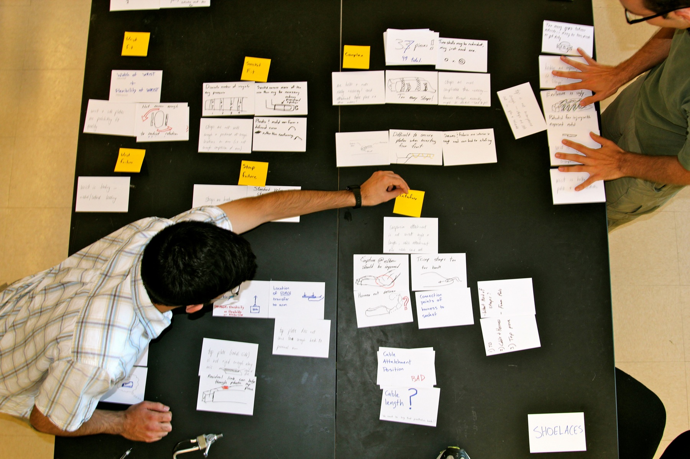

Image from: www.supportipt.com
IPT
How can a prosthetic arm be simple, innovative, and affordable?
Background
Dates: August 2011
Advisor: Ehsan Noursalehi
Illini Prosthetic Technologies (IPT) is a non-profit organization developing a rapid-fitting prosthetic arm for the developing world. Prosthetic arms are currently custom fit to each user, requiring trained professionals to spend extensive amounts of time and money in the production of each arm. IPT's open-socket technology forgoes this resource intensive process, providing rapid-fitting and comfortable prosthetic arms at in fraction of the time and at a fraction of the cost of custom-fit arms.
Projects
I worked with IPT on a number of projects including- Product Design - I helped IPT evaluate the strengths and weaknesses of its product design based on user research. I aided with prototyping product improvements using cardboard, metal, plastic, and fabric.
- Market Research - I conducted market research on the number of amputees in developing regions and their access to prosthetic care. The findings of this research were published the second edition of IPT's journal.
- Competitor Analysis - I researched IPT's competitors in the rapid-fitting prosthetic arm market and presented my findings to IPT leadership.
- Magazine Editing - I wrote and article for and was Assistant Editor for the second edition of IPT's journal.
Images

Identifying potential product improvements